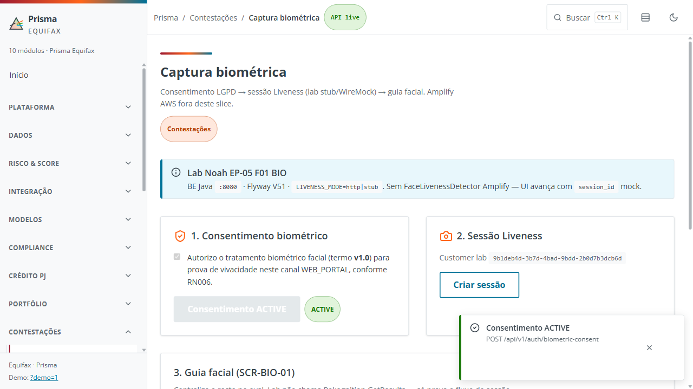
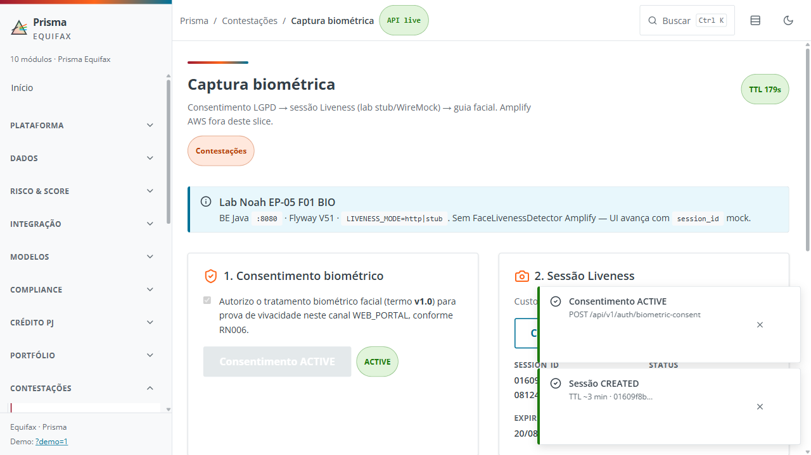
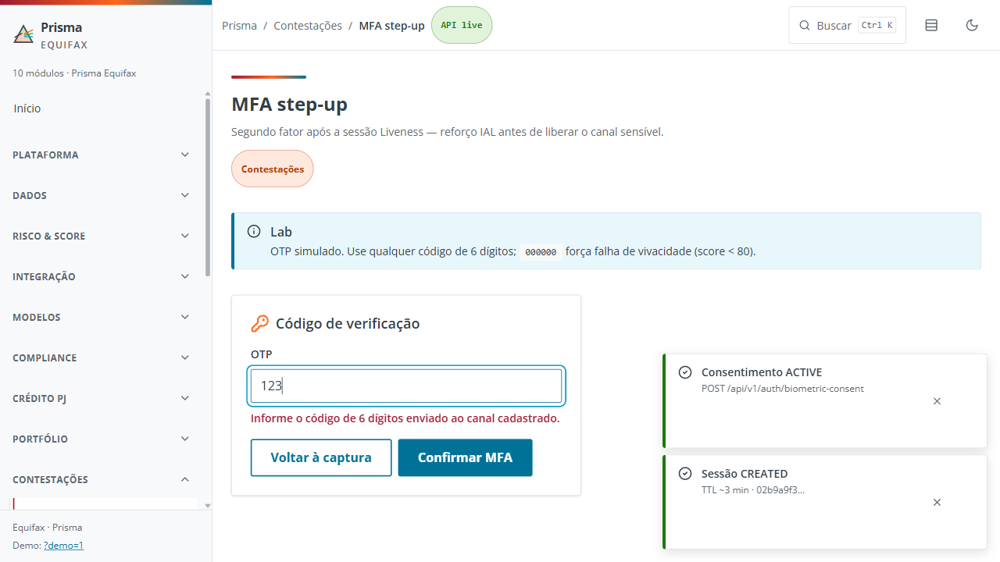
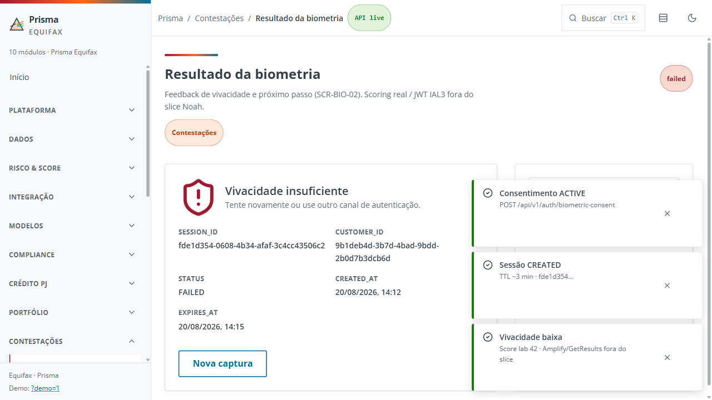
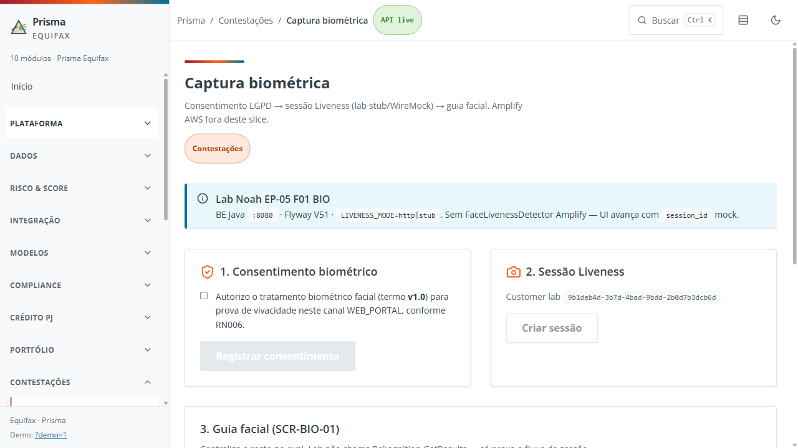
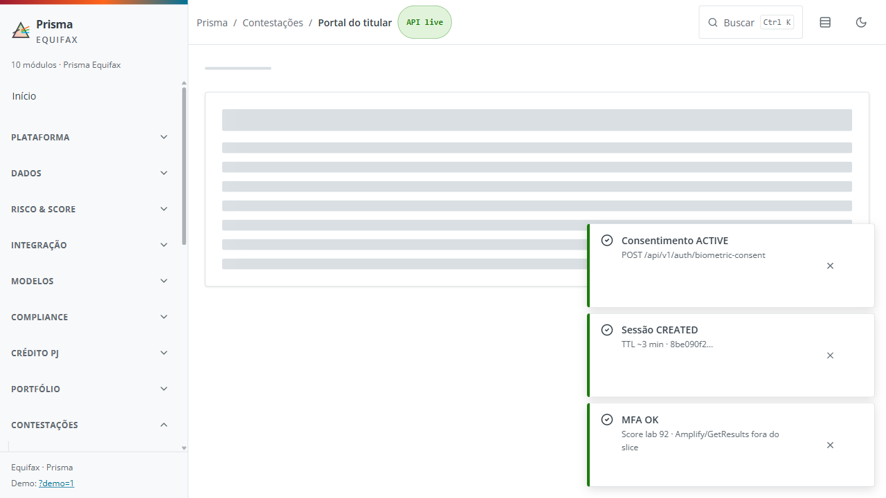
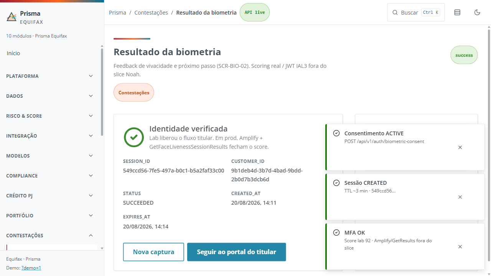
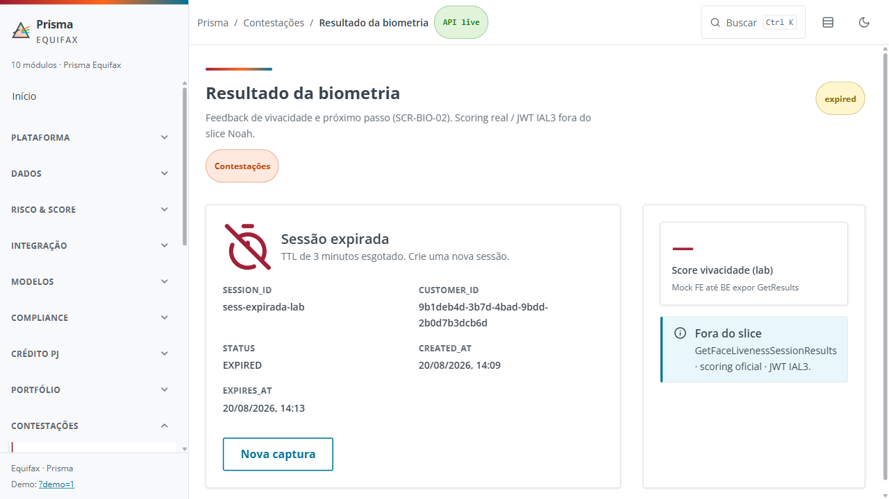
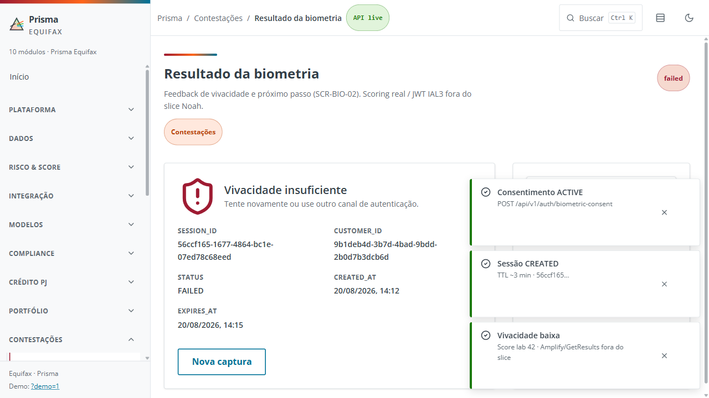

01 · Veredito
GO lab: 14 passed · 0 skipped. Artefatos Playwright anexados.
Excel: qa-ep05-auth-esteira-v2.xlsx
Playwright HTML: playwright/ep05-auth/relatorios/index.html
JSON: playwright/ep05-auth/relatorios/qa-ep05-auth-v2.json
JUnit: playwright/ep05-auth/relatorios/qa-ep05-auth-v2.junit.xml
02 · Cenários e logs
| ID | Cenário | Status | ms | Log / erro |
|---|---|---|---|---|
| AUTH-01 | AUTH-01 [Positivo] Autenticação inicial e emissão de OTP | passed | 6559 | ╔══════════════════════════════════════════════════════╗ ║ 🎬 DEMO QA — PRISMA EP-05-AUTH (v2) ║ ╚══════════════════════════════════════════════════════╝ 🧪 TESTANDO: AUTH-01 [Positivo] Autenticação inicial e emissão de OTP → Abrindo captura biométrica (lab AUTH)... ✅ Consentimento ACTIVE — sessão disponível 🏁 AUTH-01 [Positivo] Autenticação inicial e emissão de OTP CONCLUÍDO |
| AUTH-02 | AUTH-02 [Positivo] Validação bem-sucedida do OTP | passed | 7789 | 🧪 TESTANDO: AUTH-02 [Positivo] Validação bem-sucedida do OTP → Indo ao MFA e submetendo OTP válido... ✅ Identidade verificada (score lab 92) 🏁 AUTH-02 [Positivo] Validação bem-sucedida do OTP CONCLUÍDO |
| AUTH-03 | AUTH-03 [Positivo] Validação biométrica facial e prova de vida | passed | 5134 | 🧪 TESTANDO: AUTH-03 [Positivo] Validação biométrica facial e prova de vida → Sessão + guia oval... ✅ Moldura pronta para captura lab 🏁 AUTH-03 [Positivo] Validação biométrica facial e prova de vida CONCLUÍDO |
| AUTH-04 | AUTH-04 [Positivo] Reenvio / temporizador (lab TTL) | passed | 5508 | 🧪 TESTANDO: AUTH-04 [Positivo] Reenvio / temporizador (lab TTL) → Conferindo temporizador de sessão... ✅ TTL visível 🏁 AUTH-04 [Positivo] Reenvio / temporizador (lab TTL) CONCLUÍDO |
| AUTH-05 | AUTH-05 [Positivo] Ajuste de iluminação / guia oval | passed | 6376 | 🧪 TESTANDO: AUTH-05 [Positivo] Ajuste de iluminação / guia oval → Conferindo instrução de enquadramento... ✅ Guia de captura visível 🏁 AUTH-05 [Positivo] Ajuste de iluminação / guia oval CONCLUÍDO |
| AUTH-06 | AUTH-06 [Positivo] Conclusão MFA e acesso ao portal | passed | 9321 | 🧪 TESTANDO: AUTH-06 [Positivo] Conclusão MFA e acesso ao portal → MFA ok e avanço ao portal do titular... ✅ Portal do titular 🏁 AUTH-06 [Positivo] Conclusão MFA e acesso ao portal CONCLUÍDO |
| AUTH-07 | AUTH-07 [Negativo] Código de verificação em formato inválido | passed | 8026 | 🧪 TESTANDO: AUTH-07 [Negativo] Código de verificação em formato inválido → OTP incompleto deve bloquear... ✅ Alerta de código inválido 🏁 AUTH-07 [Negativo] Código de verificação em formato inválido CONCLUÍDO |
| AUTH-08 | AUTH-08 [Negativo] Falha de vivacidade / bloqueio lab | passed | 7508 | 🧪 TESTANDO: AUTH-08 [Negativo] Falha de vivacidade / bloqueio lab → OTP de falha de vivacidade... ✅ Vivacidade insuficiente 🏁 AUTH-08 [Negativo] Falha de vivacidade / bloqueio lab CONCLUÍDO |
| AUTH-09 | AUTH-09 [Negativo] Similaridade abaixo do patamar | passed | 6936 | 🧪 TESTANDO: AUTH-09 [Negativo] Similaridade abaixo do patamar → Score lab abaixo do patamar... ✅ Score 42 🏁 AUTH-09 [Negativo] Similaridade abaixo do patamar CONCLUÍDO |
| AUTH-10 | AUTH-10 [Negativo] Prova de vida lab sem Amplify | passed | 3053 | 🧪 TESTANDO: AUTH-10 [Negativo] Prova de vida lab sem Amplify → Aviso de prova de vida fora do slice... ✅ Contingência lab visível 🏁 AUTH-10 [Negativo] Prova de vida lab sem Amplify CONCLUÍDO |
| AUTH-11 | AUTH-11 [Negativo] Recusa de permissão da câmera | passed | 6217 | 🧪 TESTANDO: AUTH-11 [Negativo] Recusa de permissão da câmera → Câmera recusada... ✅ Orientação de câmera 🏁 AUTH-11 [Negativo] Recusa de permissão da câmera CONCLUÍDO |
| AUTH-12 | AUTH-12 [Regressivo] Sessão expirada (TTL) | passed | 7105 | 🧪 TESTANDO: AUTH-12 [Regressivo] Sessão expirada (TTL) → Injetando sessão vencida... ✅ Sessão expirada 🏁 AUTH-12 [Regressivo] Sessão expirada (TTL) CONCLUÍDO |
| AUTH-13 | AUTH-13 [Regressivo] Termo e purga LGPD (consentimento) | passed | 5198 | 🧪 TESTANDO: AUTH-13 [Regressivo] Termo e purga LGPD (consentimento) → Termo biométrico... ✅ Termo v1.0 / RN006 🏁 AUTH-13 [Regressivo] Termo e purga LGPD (consentimento) CONCLUÍDO |
| AUTH-14 | AUTH-14 [Regressivo] Contingência do serviço biométrico | passed | 4147 | 🧪 TESTANDO: AUTH-14 [Regressivo] Contingência do serviço biométrico → Notice de contingência lab... ✅ Indisponibilidade lab sem detalhe interno 🏁 AUTH-14 [Regressivo] Contingência do serviço biométrico CONCLUÍDO |
03 · Evidências Playwright (imagens, vídeos, traces, anexos)











ZIP · 0d3cc561336b2b71ad98a8aef3623bfdd9b92ba3.zip

ZIP · 3af333fc57cb2775e20406c3e178d6941c9e86a3.zip
ZIP · 3e6881b10d914ec41ffd488553fc0a457a59b9e1.zip

ZIP · 57fd2579e6477a78b2655979c953b06e9ade013a.zip
ZIP · 5dfa349608e7128d3de93f4e53291c2feefe15b0.zip

ZIP · 847b418ffa35f26f970835c3ab0f1e944a70bbfc.zip

ZIP · a7aada27a6b50291f310489cb1bd703ab35a87e8.zip

ZIP · ad604c6c0f7d94bd3fc1f62d96f4ef7d36113f63.zip

ZIP · b7339f99b35e534be9a4e605a74d4ab8e2c199f8.zip
ZIP · b882b36989784fdc647df9d0d2024cc5d99ea8fd.zip

ZIP · ca0feee2d640f4706e186d4c7bbfbddbf435ea2f.zip
ZIP · d5d2008072941420ff149d4b7d27ec9b167f8773.zip
ZIP · e27000df0ef3282fdd63f98f1a2c4cb4ca32bcd4.zip

ZIP · f5d562af906549a630bf9afadea2b1cec2c12ce0.zip